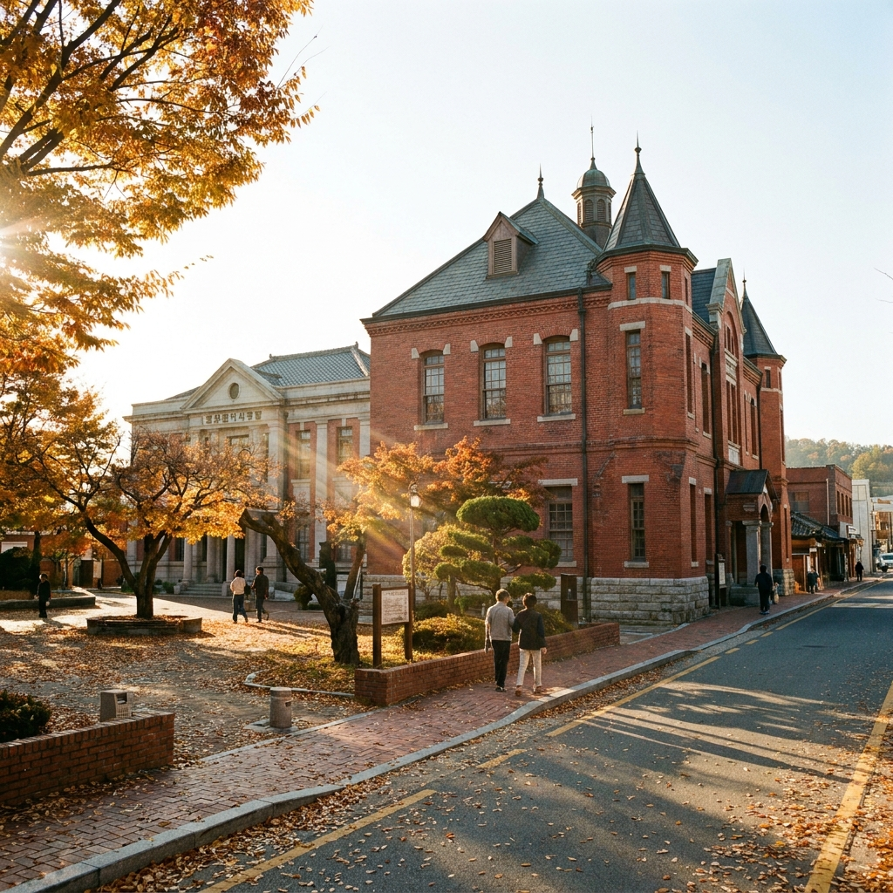
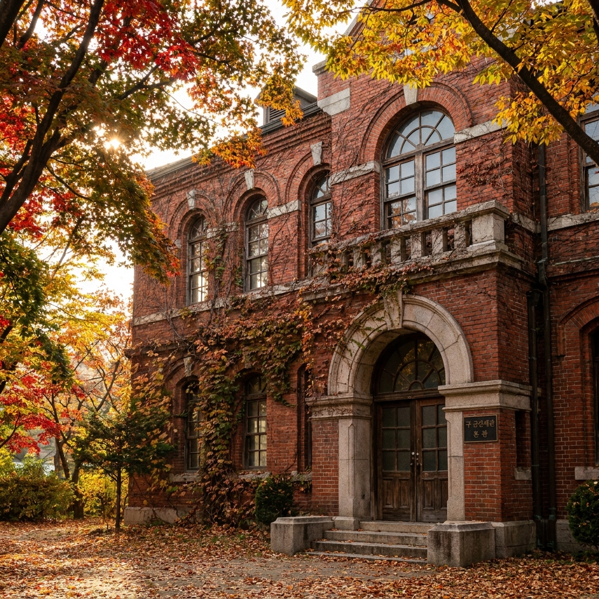
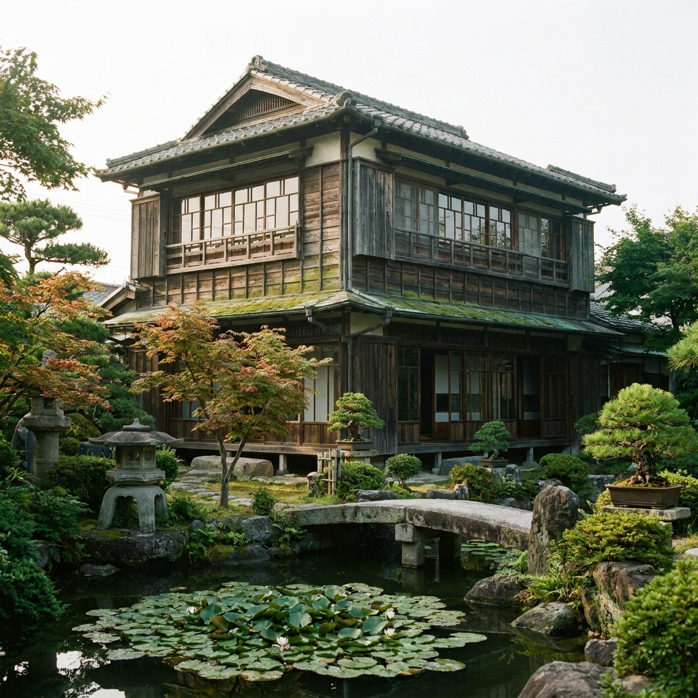

전북 군산 근대문화거리 가을 도보 코스 — 이성당 빵 나오는 시간과 박물관 통합권 요금 비교 체크리스트
높고 푸른 가을 하늘 아래 선선한 바닷바람을 맞으며 역사의 숨결을 걷는 전북 군산 근대문화거리(시간여행마을)는 도보 여행자에게 가장 이상적인 가을 당일치기 명소입니다. 일제강점기 쌀 수탈의 아픈 역사와 근대 건축 유산이 오롯이 남아 있는 원도심 일대는 도보 10~15분 반경 안에 주요 명소가 오밀조밀 모여 있어 자가용 없이도 산책하기에 최적입니다.
군산 근대역사박물관을 비롯해 근대미술관(구 18은행), 근대건축관(구 조선은행), 진포해양테마공원을 아우르는 통합 관람권은 성인 기준 3,000원으로, 개별 발권 합산 금액(4,500원) 대비 33% 이상 절약할 수 있습니다.
또한 대한민국에서 가장 오래된 빵집인 이성당의 대표 메뉴 단팥빵과 야채빵이 나오는 핵심 시간표와 대기 요령, 그리고 신흥동 일본식 가옥과 초원사진관을 잇는 추천 도보 동선 체크리스트를 상세히 안내해 드립니다.

군산 시간여행마을의 중심 근대역사박물관과 옛 군산세관 가을 전경 / AI 제작 이미지
01 | 가을 바닷바람과 함께 걷는 시간여행 전북 군산 근대문화거리의 매력
전라북도 서북단 금강 하구에 자리 잡은 군산은 1899년 개항 이후 호남평야의 막대한 쌀을 일본으로 실어 나르던 수탈의 아픔과 항일의 역사가 공존하는 살아있는 근대 역사 박물관입니다.
원도심의 월명동과 장미동, 영화동 일대에 걸쳐 조성된 '군산 근대문화거리'는 일제강점기 은행, 세관, 무역회사, 적산가옥 등 근대 건축물들이 잘 보존되어 있어 거리 전체가 마치 1930년대로 시간 이동을 한 듯한 독특한 분위기를 자아냅니다.
특히 가을철에는 바다와 강이 만나는 시원한 바람이 불어와 도보 산책의 피로도를 낮춰주며, 감성적인 벽화 골목과 독립 서점, 개성 있는 로컬 카페들이 어우러져 젊은 층과 가족 단위 여행자 모두에게 큰 사랑을 받고 있습니다.
모든 주요 명소가 반경 1.5km 내에 밀집해 있어 주차 후 도보로만 하루 코스를 완벽하게 둘러볼 수 있다는 점이 군산 근대문화거리 여행의 가장 큰 장점입니다.
02 | 군산 근대역사박물관 관람 동선과 주요 전시 하이라이트
군산 시간여행의 출발점이자 랜드마크인 군산 근대역사박물관은 '국제무역항 군산'의 과거와 현재, 미래를 한눈에 조망할 수 있는 복합 문화 공간입니다.
지상 3층 규모의 박물관은 1층 해양물류역사관, 어린이박물관, 2층 근대자료규장각실, 3층 근대생활관 및 기획전시실로 구성되어 있습니다.
관람의 핵심 하이라이트는 3층에 위치한 '1930년 시간여행 근대생활관'입니다. 1930년대 군산의 미곡취인소, 영명학교, 야마구치 주조점, 토막집(빈민가) 등 11채의 건물을 실물 크기로 재현해 놓아 관람객이 직접 내부로 들어가 만져보고 의상을 입어보며 당시 서민들의 삶을 생생하게 체감할 수 있습니다.
탁 트인 서해 바다와 뜬다리부두(부잔교)가 내려다보이는 3층 전망 휴게 공간에서 잠시 쉬어가며 금강 하구의 가을 정취를 감상하는 것도 추천합니다.
03 | 구 군산세관 본관과 근대미술관·근대건축관(구 조선은행) 건축 투어
박물관 바로 옆에는 서울역사, 한국은행 본점과 함께 국내에 현존하는 서양 고전주의 3대 근대 건축물 중 하나로 꼽히는 구 군산세관 본관이 자리하고 있습니다.
1908년에 준공된 이 건물은 벨기에산 붉은 벽돌과 독일식 징크 지붕, 화강암 기초가 어우러진 아름다운 외관을 자랑하며, 내부에는 밀수품 전시와 세관 역사 자료관이 마련되어 있습니다.
도보로 3분 거리에 있는 군산 근대미술관은 옛 일본 제18은행 군산지점을 보수하여 미술관으로 활용한 공간으로, 등록문화재인 금고동과 안중근 의사 기념전시실이 함께 운영됩니다.
조금 더 걸어가면 만날 수 있는 군산 근대건축관은 구 조선은행 군산지점 건물로, 웅장한 기둥과 높은 천장 아래 일제강점기 식민 지배 금융의 실상과 군산의 근대 건축물 모형들을 일목요연하게 전시하고 있습니다.

고풍스러운 서양식 붉은 벽돌 건축미를 간직한 구 군산세관 본관 / AI 제작 이미지
04 | 주요 문화시설 단일권 vs 통합 관람권 요금 및 혜택 비교표
군산 근대문화거리를 관람할 때는 개별 시설마다 표를 끊는 것보다 4대 핵심 전시관을 모두 입장할 수 있는 '통합권'을 발권하는 것이 훨씬 경제적입니다.
| 구분 |
대상 시설 |
성인 요금 |
청소년·군경 |
어린이 (초등) |
| 근대역사박물관 (단일권) |
박물관 본관 |
2,000원 |
1,000원 |
500원 |
| 근대미술관 (단일권) |
구 일본 제18은행 지점 |
500원 |
300원 |
200원 |
| 근대건축관 (단일권) |
구 조선은행 군산지점 |
1,000원 |
700원 |
500원 |
| 진포해양테마공원 (단일권) |
위봉함 내부 전시관 |
1,000원 |
700원 |
300원 |
| 통합 관람권 (추천) |
박물관 + 미술관 + 건축관 + 진포해양공원 |
3,000원 |
2,000원 |
1,000원 |
통합 관람권은 발권 당일 하루 동안 4개 시설을 자유롭게 둘러볼 수 있으며, 군산 시민의 경우 추가 50% 할인 혜택이 적용됩니다. 미취학 아동 및 65세 이상 어르신은 무료입장이 가능합니다.
05 | 100년 전통의 빵집 이성당 대표 빵 나오는 시간과 대기 요령
문화거리 산책 중 절대 빼놓을 수 없는 필수 식도락 코스는 1945년 해방과 함께 문을 열어 80년 넘는 역사를 이어오고 있는 대한민국 현존 최고(最古) 빵집 이성당(李盛堂)입니다.
이성당의 양대 시그니처 메뉴인 단팥빵(2,000원)과 아삭한 양배추 식감이 일품인 야채빵(2,500원)은 구관 매장에서만 줄을 서서 구매할 수 있습니다.
빵 나오는 시간은 평일과 주말 오전 08시 30분 첫 빵을 시작으로 대략 1시간~1시간 30분 간격으로 꾸준히 구워져 나옵니다. 특히 인파가 몰리는 오전 10시~11시, 오후 14시~15시 시간대에는 대기 줄이 길어지므로 빵 나오는 시각 15분 전에 미리 줄을 서는 것이 요령입니다.
만약 단팥빵과 야채빵 외에 크루아상, 조각 케이크, 타르트 등 일반 베이커리와 카페 음료를 즐기고 싶다면 줄을 서지 않고 바로 옆 신관 매장으로 입장하시면 쾌적하게 빵을 구매하고 2층 카페에서 즐기실 수 있습니다.
06 | 일본식 가옥 신흥동 히로쓰 가옥과 말랭이마을 골목길 산책
이성당에서 서쪽으로 도보 7분 거리에는 영화 '타짜'와 '장군의 아들' 촬영지로 널리 알려진 신흥동 일본식 가옥(구 히로쓰 가옥)이 있습니다.
일제강점기 군산의 대규모 미곡 유통상이었던 히로쓰 게이사부로가 지은 2층 목조 가옥으로, 전형적인 일본 무가(武家) 양식의 고급 주택 구조와 정교하게 가꾸어진 일본식 정원이 원형 그대로 남아 있습니다.
문화재 보호를 위해 현재 내부 관람은 제한되지만, 정원 산책로를 따라 걸으며 다다미방 창살과 편백나무 외벽의 이국적인 건축미를 관람할 수 있습니다.
가옥 뒤편 언덕으로 이어지는 말랭이마을은 6.25 전쟁 피란민들이 터를 잡았던 산비탈 마을로, 현재는 예술인 레지던시와 아기자기한 골목벽화, 양조장 체험장이 어우러져 가을 감성 사진 명소로 인기가 높습니다.

옛 일본식 고급 저택 양식과 가을 정원이 보존된 신흥동 일본식 가옥 / AI 제작 이미지
07 | 하구언의 역사와 군함 체험이 있는 진포해양테마공원 둘러보기
바닷가 방면으로 발걸음을 옮기면 고려 말 최무선 장군이 왜선 500여 척을 화포로 격파한 '진포대첩'을 기념하여 조성된 진포해양테마공원이 나옵니다.
공원 야외에는 육·해·공군 퇴역 군용기, 탱크, 장갑차, 해경 경비정 등이 실물로 전시되어 있어 어린이와 청소년의 호기심을 자극합니다.
이곳의 메인 볼거리는 제2차 세계대전에 참전했던 4,200톤급 상륙함 위봉함(LST 671)입니다. 거대한 군함 내부로 직접 들어가 병영 생활관, 조타실, 전술 상황실 등을 관람하고 진포대첩의 화약 개발 역사를 디오라마로 살펴볼 수 있습니다.
위봉함 뒤편 해안 데크에서는 조수간만의 차를 극복하기 위해 바다 위에 띄워 만든 콘크리트 다리 '뜬다리부두(부잔교)'를 직접 관찰할 수 있어 수탈 역사의 현장을 피부로 느끼게 됩니다.
08 | 군산 원도심 공영주차장 위치 안내와 무료 주차 팁
자가용을 이용해 군산 근대문화거리를 찾을 경우, 가장 추천하는 주차 거점은 군산근대역사박물관 대형 공영주차장(무료)입니다.
약 300대 이상 수용 가능한 무료 주차장으로, 이곳에 주차한 뒤 박물관 관람을 시작으로 도보 루프를 돌고 돌아오기에 동선상 가장 완벽합니다.
만약 주말 점심 피크 시간대에 박물관 주차장이 만차일 경우, 도보 3분 거리의 내항 공영주차장(장미동 45 일원, 무료)이나 신흥동 공영주차장(월명동 주민센터 인근, 무료)을 이용하시면 혼잡을 피할 수 있습니다.
원도심 골목길은 일방통행이 많고 보행자가 붐비므로 골목 진입보다는 외곽 대형 공영주차장에 일찌감치 차를 대고 걷는 것이 시간과 스트레스를 아끼는 지름길입니다.
09 | 군산 근대문화거리 당일치기 뚜벅이 도보 동선표와 필수 체크리스트
도보 효율을 극대화한 시간대별 당일치기 추천 루트와 유의사항 체크리스트를 제안합니다.
📅 군산 근대문화거리 가을 도보 추천 코스
· 10:00 ~ 11:30 : 근대역사박물관 주차 후 통합권 발권 → 박물관 본관 & 구 군산세관 관람
· 11:30 ~ 12:30 : 이성당으로 이동, 빵 구매 대기 및 신관 2층에서 빵과 커피로 간식 타임
· 12:30 ~ 14:00 : 영화동 맛집 골목에서 매콤한 짬뽕 또는 소고기뭇국 점심 식사
· 14:00 ~ 15:30 : 초원사진관 기념사진 촬영 → 신흥동 일본식 가옥 & 말랭이마을 골목길 산책
· 15:30 ~ 17:00 : 근대미술관 → 근대건축관 → 진포해양테마공원(위봉함) 관람 후 주차장 복귀
💡 군산 도보 여행 필수 체크리스트
1. 월요일 방문 시 근대역사박물관 등 공공 전시관이 휴관일 수 있으니 사전 개관 여부를 확인하세요.
2. 이성당 단팥빵과 야채빵은 1인당 구매 수량 제한(보통 10~20개)이 적용될 수 있습니다.
3. 초원사진관 앞은 사진 대기 줄이 길 수 있으므로 오전에 일찍 들르는 것이 수월합니다.
4. 박물관 통합권은 종이 티켓을 분실하지 않도록 4개 관람관을 모두 돌 때까지 잘 보관하세요.
#군산근대문화거리
#군산시간여행마을
#군산근대역사박물관
#이성당빵나오는시간
#이성당단팥빵
#신흥동일본식가옥
#구군산세관
#진포해양테마공원
#군산당일치기
#군산도보여행